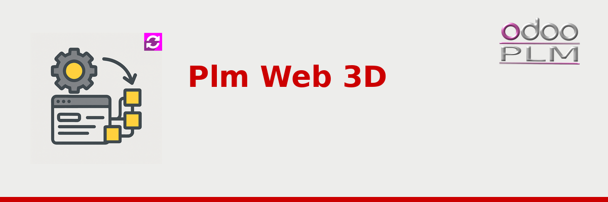

View CAD assemblies and parts directly in the Odoo web interface — no plugins, no desktop software, no CAD license needed for reviewers.
Embedded inside the PLM document form. The 3D model is linked directly to the product record and its Bill of Materials.
Click two snap points to measure distances in mm. Labels track the cursor in real time. Hover any part to see its name tooltip fetched from Odoo.
Draw on screenshots, add comments and create Odoo activities — all from inside the viewer using Fabric.js canvas tools.
Parts turn pink with wireframe edges on hover. Part name tooltip appears after 1 second, fetched live from Odoo.
Ctrl+Click two snap points to measure distance in mm. Label tracks cursor in real time and shows result at line midpoint.
Slider (0–100) explodes the assembly outward from its bounding-box centre. Displacement is proportional to assembly size.
Draw, annotate and submit screenshots with comments or Odoo activities directly from inside the viewer.
Save the current 3D view as a JPEG with one toolbar click. Useful for quick documentation snapshots.
Hovering a part in the 3D scene highlights and auto-scrolls to the matching entry in the document tree panel.
Orientation cube in the bottom-right corner. Click any face to snap the camera to Front, Back, Top, Bottom, Left or Right.
Frosted-glass overlay shows file name, animated progress bar and percentage while any format is loading.
For DXF files, rotation is disabled, floor/grid/axes are hidden, and 3D-only controls are removed from the settings panel.
Attach a .glb, .3mf, .stl, .stp or other supported file to an Odoo PLM document record.
STEP files are auto-converted to 3MF on first open via the plm_automated_convertion module. Result is cached.
Click the "3D Web" button — Three.js renders the model in-browser with a frosted loading progress bar.
Measure, explode, mark up, screenshot and create Odoo activities — all without leaving the browser.